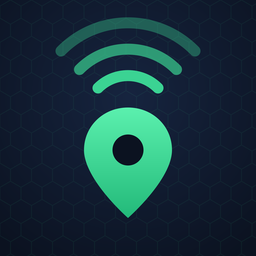

SignalScout
Find the carrier that actually works at your address.
How does SignalScout pick a carrier?
Wireless carriers must report their mobile coverage to the FCC. They build those maps with engineering models of their real towers: location, antenna direction, height and frequency bands. SignalScout reads that published data for the area around your address and scores each carrier on speed, signal strength (including whether it's strong enough for in-vehicle use, a good sign for indoor coverage) and how consistent coverage is nearby.
Where does it work?
Mississippi, for now. More states are on the way. Outside the covered area, the app tells you instead of guessing.
Why might my real signal be different?
Scores come from carrier-reported models, not live measurements. Buildings, terrain, trees, network congestion and your phone itself all affect real-world signal, especially indoors.
Is SignalScout affiliated with a carrier?
No. SignalScout is independent and isn't affiliated with or paid by any wireless carrier. This product uses the FCC Data API but is not endorsed or certified by the FCC.
Privacy
No account, no ads, no tracking. Read the full privacy policy.